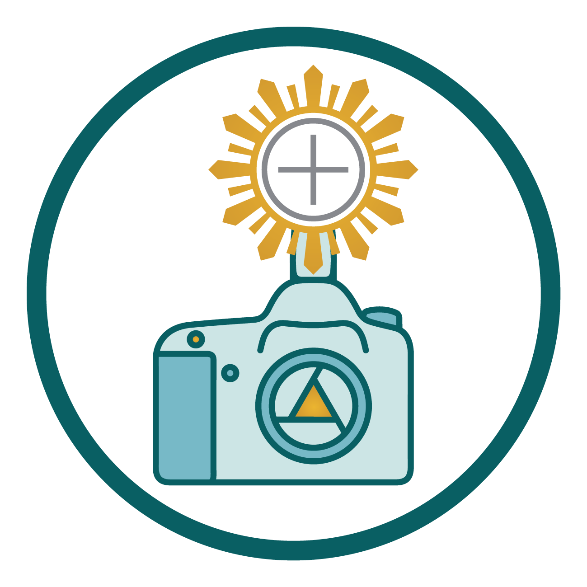
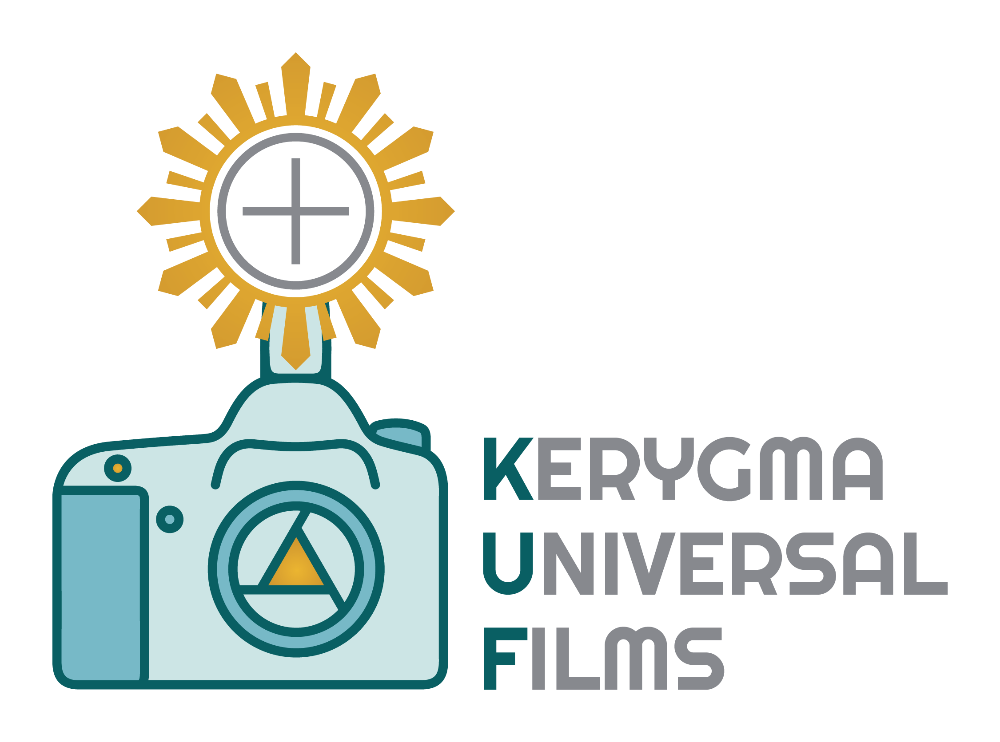

Asistente educativo del área de Formación de Kerygma Universal Films

Asistente educativo de Formación¡Hola, soy tu compañero de camino!
Estoy aquí para acompañarte a explorar el área de Formación de Kerygma Universal Films.
¿Qué te gustaría descubrir?